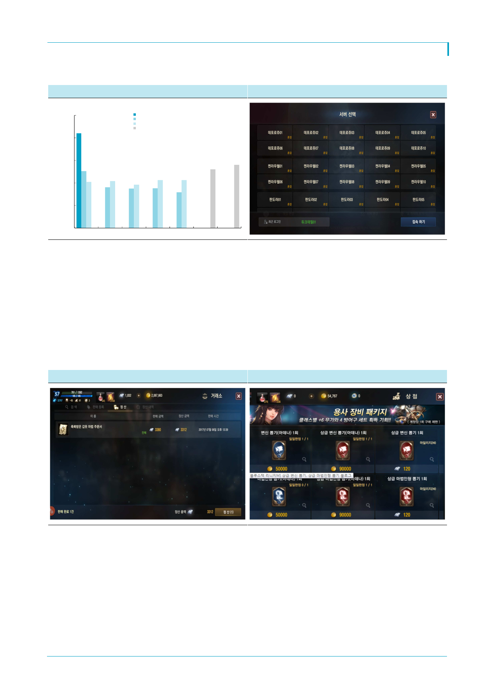

엔씨소프트(036570)
[그림 5] ‘리니지 M’과 ‘리니지 레볼루션’ 초기 DAU 추이
(1,000명)
2,500
2,000
리니지 M(공식)
리니지 M(와이즈앱, 구글)
리니지 레볼루션(와이즈앱)
리니지M(App Ape)
[그림 6] 거래소 출시 이후 서버 ‘혼잡’ 상황 지속
1,500
1,000
500
0
06.21 06.22 06.23 06.24 06.25
자료: 엔씨소프트, 와이즈앱, App Ape, 한국투자증권
06.26
06.27
자료: 엔씨소프트, 한국투자증권
‘리니지 M’ 이용자 이탈에 대한 우려도 기우이다. 와이즈앱에 따르면 ‘리니지 M’의 안드로
이드 DAU는 출시 이후 지속 하락하며 25일 79만명을 기록했다. 하지만 App Ape에 따르
면 26일 DAU는 130만명을 기록했으며 27일 140만명으로 증가했다. 한편 엔씨소프트에
따르면 ‘리니지 M’의 DAU는 150만명 수준을 꾸준히 유지하고 있다. 즉, 외부 추정치에는
추정 방식에 따라 큰 오차가 존재하며 이용자의 급격한 감소는 사실이 아니다. 한편, 거래
소 출시 이후 패치 작업으로 ‘원활’ 서버의 수가 일시적으로 증가했으나 안정화 이후 금요
일 오후부터 전 서버가 ‘혼잡’ 상황을 유지 중이다. 유명 서버의 경우 출시 초기와 비교해
도 대기 시간이 늘어나고 있는 것으로 파악된다.
[그림 7] ‘리니지 M’ 거래소 화면
[그림 8] 거래소에서 획득한 ‘다이아’로 게임 내 아이템 구매 가능
자료: 엔씨소프트, 한국투자증권
자료: 엔씨소프트, 한국투자증권
거래소 출시로 고과금 이용자들의 ARPU가 상승하는 동시에 저과금 이용자들의 이탈이
최소화 될 전망이다. 고과금 이용자들은 캐릭터 강화를 위해 거래소에 등록된 아이템들을
게임 내에서 구입한 ‘다이아’를 통해 구매한다. 고과금 이용자들의 경우 확률형 아이템 및
‘아인사하드의 축복’ 구매에도 거부감이 낮았던 것으로 파악되기 때문에 거래소 기능은 추
가적인 매출 상승 요인이라고 판단한다. 저과금 및 무과금 이용자들은 필드에서 획득 가
능한 아이템을 거래소에서 판매해 ‘다이아’를 확보할 수 있다. 이를 통해 기존에는 구입할
수 없었던 확률형 아이템에 대한 접근성이 높아짐에 따라 캐쥬얼 이용자들의 불만이 줄어
들 것으로 예상한다.
4